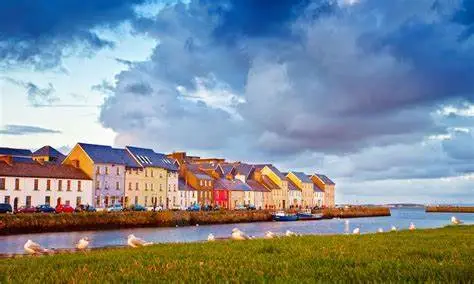

Locais que visitei

📍Roma - Itália
Conheci o Coliseu, provei os famosos gelatos italianos e Pierre, um grande seguidor desse meu blog, me mostrou a melhor pizzaria de sua cidade.

📍Galway - Irlanda
Visitei a catedral e as Ruínas do Salão do Conde Vermelho, comi a Shepherd’s Pie e olhei algumas das universidades locais.